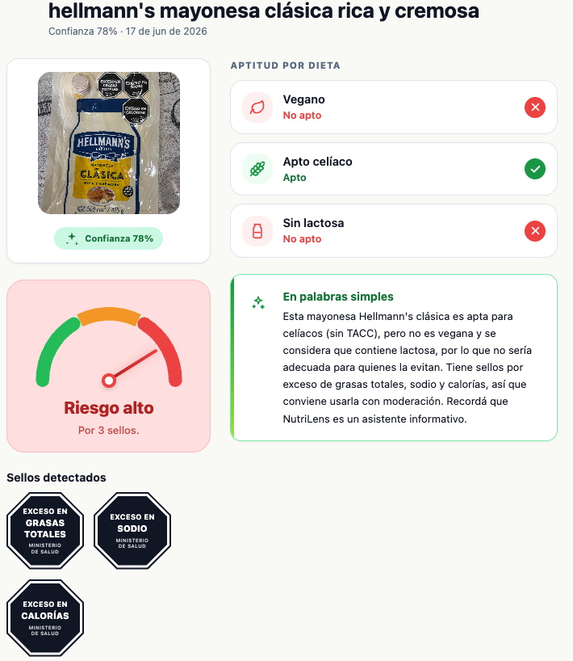
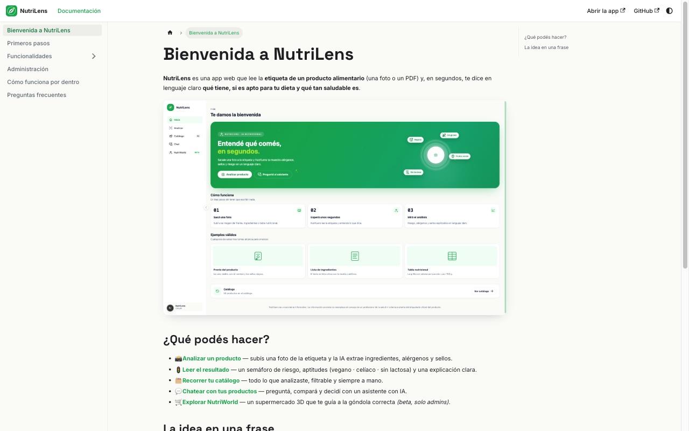
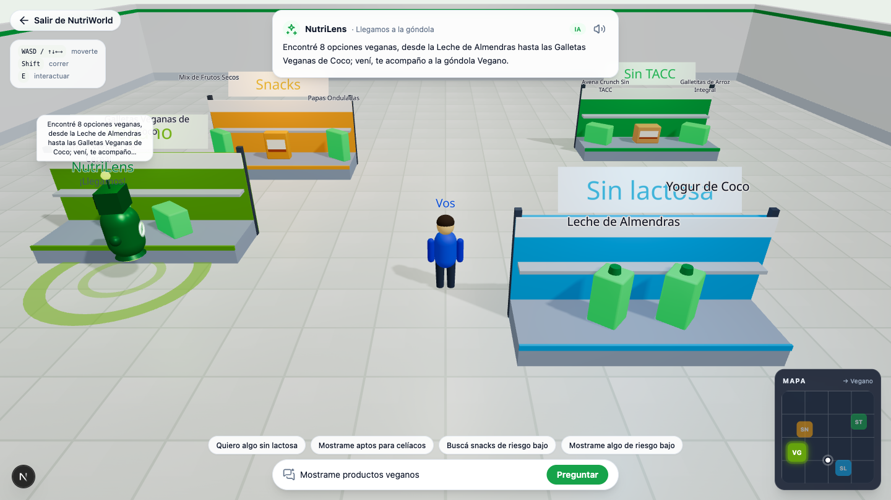

NutriLens lee la etiqueta por vos con IA: ingredientes, alérgenos, sellos y si es apto para tu dieta. Claro, rápido y sin letra chica.
Por qué la etiqueta no alcanza en la góndola.
De la foto al veredicto: riesgo, aptitudes y explicación.
Catálogo, chat con IA, código de barras y documentación.
Desarrollo asistido por IA, arquitectura en Azure y pipeline observable.
Las métricas y los números del proyecto.
Roadmap, una sorpresa y cierre.
Caseína, suero, gluten escondido en aditivos.
Densa, en minúscula, con nombres que no dicen nada.
"Exceso en azúcares"… ¿qué tan grave para lo que busco?
Harina de trigo, azúcar, grasa vegetal, jarabe de glucosa, cacao, suero de leche en polvo, lecitina de soja, saborizante…
Celíaco o intolerante a la lactosa: necesita confirmar aptitud antes de comprar.
Quiere comer mejor: entender sellos y elegir lo de menor riesgo.
Tiene dos opciones en la mano y quiere la de mejor perfil nutricional.
En góndola, decidir es un test de lectura rápida que casi siempre se pierde. NutriLens lo gana por vos.
Una foto del frente, los ingredientes o la tabla nutricional. Validamos que sea un producto antes de gastar un token.
Extrae ingredientes, alérgenos y sellos a un JSON estructurado y validado con Zod.
Riesgo, aptitudes y una explicación clara. Todo queda guardado en tu catálogo.
🔒 El LLM extrae. Nuestras reglas deciden. La aptitud y el riesgo nunca dependen de lo que "opine" el modelo — se calculan con reglas propias y deterministas.
Riesgo arriba, aptitudes con íconos, ingredientes, alérgenos y sellos regulatorios. Todo en una sola pantalla, en lenguaje claro — sin tecnicismos ni letra chica.

Calculamos un riesgo bajo / medio / alto con fórmula propia, y resolvemos la aptitud para tres dietas con reglas auditables. Sin cajas negras.
Sellos octogonales + leyendas precautorias, detectados del frente del paquete y explicados en contexto.
10 alérgenos canónicos, cada uno con su glifo. Inferencia propia desde los ingredientes.
⚖️ La aptitud se deriva de estas reglas — no de la "opinión" del modelo.
Cada análisis queda guardado. Filtrá por categoría, riesgo o alérgeno, y entrá a "Analizados por vos" para ver solo lo tuyo.
Un chat con RAG sobre los productos que cargaste — responde en texto o con tarjetas y tablas.
Decodificamos el código de barras de la foto (o de una foto dedicada).
Base abierta y colaborativa. Si el producto está, es fuente autoritativa.
Y sube la confianza del análisis. Si no decodifica, el flujo igual avanza.
Validación soft: el código de barras es un booster de confianza, nunca una barrera.
Un sitio de documentación con Docusaurus: una guía por cada funcionalidad, con capturas reales de la app, búsqueda y modo claro/oscuro.
Analizar · resultado · catálogo · chat · NutriWorld.
Primeros pasos, administración y un FAQ con el disclaimer.

🍬 Una corrida completa de evaluación del modelo cuesta ~US$0,02 — menos de $20. Con menos de lo que sale un caramelo, entendés qué estás comiendo.
Empezar por quienes más lo necesitan: celíacos, veganos e intolerantes. Dolor real, boca a boca.
Dietéticas, nutricionistas y obras sociales como canal de distribución.
La góndola se recorre con el celular: la cámara, como entrada principal.
API para marcas y retailers que quieran mostrar transparencia.
Tu góndola, en 3D. Le hablás en lenguaje natural y NutriLens —en forma de robot— te guía a la góndola correcta y resalta los productos aptos. La misma IA del chat, ahora caminando con vos.

NutriLens es informativo — no reemplaza el consejo de un profesional de la salud.